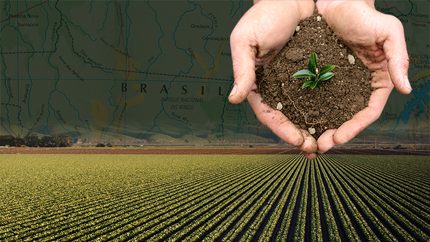
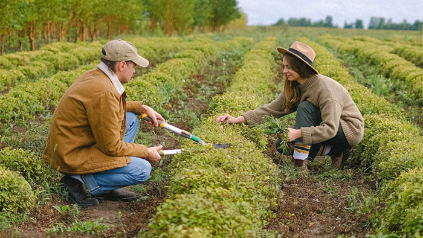
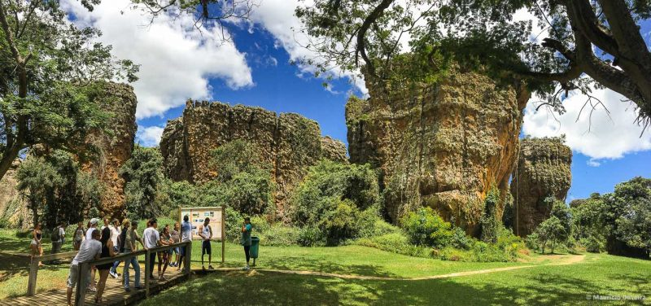

Em destaque



Comunidade
Tire dúvidas junto com a comunidade.
Ver Mais
Inovação
-
Interconexões no ambiente de inovação ampliam o empreendedorismo, a criação e o desenvolvimento de soluções conjuntas para o agro brasileiro. Conheça as ações da Embrapa que promovem o desenvolvimento do setor agropecuário, por meio da inovação aberta, da ampliação de negócios e do fortalecimento de startups.
Notícias
Patenteado bico de pulverização eletrostática
Pesquisas mostram que o emprego da eletrostática pode reduzir com facilidade, em mais de 50%, os ingredientes utilizados
LeiaBiofiltro reaproveita água doméstica para produção de alimentos e forragem
Além de ser mais uma fonte hídrica, após passar pelo tratamento no biofiltro, a água também apresenta maior concentração de nutrientes como nitrogênio, fósforo e potássio
LeiaPesquisa ajuda a identificar, pelo aroma, mangas com distúrbio do colapso interno, ajudará a entender as causas do distúrbio
entre mais de 100 compostos voláteis da manga, oito estão relacionados ao colapso do fruto
Leia
O QUE É A SUSTENTABILIDADE NA AGRICULTURA?